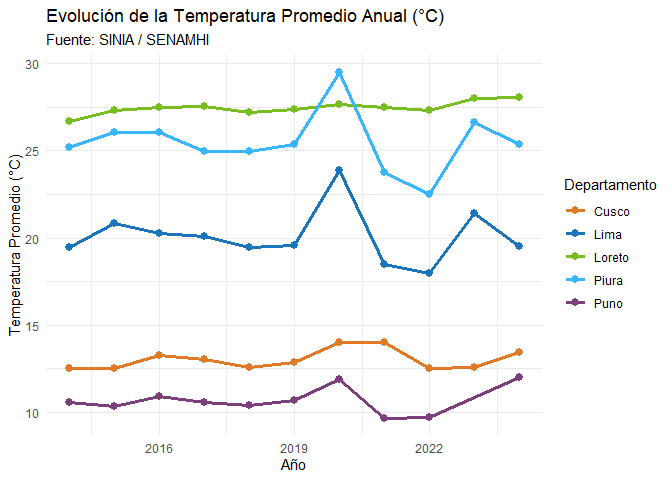

siniaR es un paquete para R diseñado para facilitar el acceso programático, exploración y análisis de las estadísticas ambientales oficiales del Perú, provenientes en vivo del Sistema Nacional de Información Ambiental (SINIA / MINAM).
Instalación
Puedes instalar la versión oficial de siniaR desde CRAN con:
install.packages("siniaR")O la versión de desarrollo en GitHub con:
# install.packages("pak")
pak::pak("PaulESantos/siniaR")Características Principales
-
sinia_indicadores(): Catálogo y árbol temático de estadísticas ambientales oficiales según el marco internacional MDEA (ONU) o el marco SINIA. -
sinia_buscar(): Búsqueda rápida de indicadores por palabras clave (ej."temperatura","pm10","glaciares","bosque"). -
sinia_ficha(): Consulta estructurada de la Ficha Técnica oficial con metodologías, fuentes, fórmulas de cálculo y notas explicativas. -
sinia_datos(): Descarga directa de matrices y series históricas en formato tidy (wideolonglisto para análisis y visualización conggplot2). -
sinia_estadistica(): Integración en un solo objeto de los metadatos de la ficha técnica y la tabla de datos procesada.
Ejemplos de Uso
library(siniaR)
library(tidyverse)
#> ── Attaching core tidyverse packages ──────────────────────── tidyverse 2.0.0 ──
#> ✔ dplyr 1.2.1 ✔ readr 2.2.0
#> ✔ forcats 1.0.1 ✔ stringr 1.6.0
#> ✔ ggplot2 4.0.3 ✔ tibble 3.3.1
#> ✔ lubridate 1.9.5 ✔ tidyr 1.3.2
#> ✔ purrr 1.2.2
#> ── Conflicts ────────────────────────────────────────── tidyverse_conflicts() ──
#> ✖ dplyr::filter() masks stats::filter()
#> ✖ dplyr::lag() masks stats::lag()
#> ℹ Use the conflicted package (<http://conflicted.r-lib.org/>) to force all conflicts to become errors1. Explorar y buscar estadísticas en el SINIA
# Buscar estadísticas relacionadas a la calidad del aire
resultados <- sinia_buscar("PM10")
head(resultados)
#> # A tibble: 2 × 7
#> id numeral nombre nivel clasificador_id padre_id marco
#> <int> <chr> <chr> <int> <int> <int> <chr>
#> 1 42 1.3.1.2 Promedio anual de partícul… 4 NA 62 mdea
#> 2 44 1.3.1.4 Material particulado con d… 4 NA 62 mdea2. Consultar la Ficha Técnica de un Indicador
# Consultar la ficha técnica de Temperatura Promedio Anual (ID = 1)
ficha <- sinia_ficha(1)
ficha
#>
#> ── Ficha Tecnica: Temperatura del aire promedio anual en estación de medición se
#> • ID: 1 (Numero: 1)
#> • Fuente: Servicio Nacional de Meteorología e Hidrología (Senamhi)
#> • Unidad de Medida: Grado Celsius (°C)
#> • Periodo de Serie: 2014-2024
#> • Ambito Geografico: Nacional, Departamental, Provincial, Distrital, Estación
#> de medición
#> • Clasificacion MDEA: 1.1.1
#>
#> ── Descripcion ──
#>
#> La temperatura del aire es uno de los elementos climáticos que está en relación
#> directa con el balance de energía, es decir, su valor o magnitud depende de la
#> fracción de Radiación Neta (Rn). Sin embargo, esta relación directa, entre
#> temperatura y Rn es afectado por otros factores como se ve a continuación: - El
#> movimiento de rotación de la tierra que da origen al ciclo diurno y el
#> movimiento de traslación que origina el ciclo anual. - La amplitud de estas
#> ondas (ciclo diurno de temperatura) son alterados por: la superficie sobre la
#> cual incide la radiación solar, masas de aire, nubosidad, transparencia
#> atmosférica, relieve topográfico, etc.
#>
#> ── Formula de Calculo ──
#>
#> Tapa = Suma de la temperatura del aire promedio mensual (Tapm) / Número de
#> meses con temperatura del aire promedio mensual (nm) del año (condición nm
#> >=7). Tapm = Suma de la temperatura del aire promedio diaria (Tapd) / Número
#> de días con temperatura del aire promedio diario (nd) del mes (condición nd
#> >=16). Donde: Tapa: temperatura del aire promedio anual Tapm: temperatura del
#> aire promedio mensual Tapd: temperatura del aire promedio diario nd: número de
#> días del mes nm: número de meses del año
#>
#> ── Metodologia ──
#>
#> La temperatura del aire promedio anual es información procesada de los datos
#> provenientes de la lectura del termómetro y de los termómetros extremos
#> (máximos y mínimos) de las estaciones de medición ubicadas principalmente en
#> capital de departamento.
#> ℹ Nota: es el valor de la temperatura del aire promedio anual en la estación de medición, ubicada principalmente en capital de departamento. (…) No se cuentan con estadísticas.3. Descargar datos en formato Tidy y visualizar
# Descargar datos en formato largo (long) para graficar
temp_long <- sinia_datos(1, pivot = "long")
# Filtrar algunos departamentos y visualizar la evolución temporal
deptos_interes <- c("Lima", "Loreto", "Cusco", "Piura", "Puno")
temp_long |>
filter(departamento %in% deptos_interes, !is.na(valor)) |>
ggplot(aes(x = anio, y = valor, color = departamento)) +
geom_line(linewidth = 1.1) +
geom_point(size = 2.5) +
scale_color_manual(values = c(
"Lima" = "#1B75BC",
"Loreto" = "#78BE20",
"Cusco" = "#E07A26",
"Piura" = "#38B6FF",
"Puno" = "#7B3F7B"
)) +
labs(
title = "Evolución de la Temperatura Promedio Anual (°C)",
subtitle = "Fuente: SINIA / SENAMHI",
x = "Año",
y = "Temperatura Promedio (°C)",
color = "Departamento"
) +
theme_minimal()
📊 Acceso Rápido a Indicadores Frecuentes
A continuación se presentan algunos de los indicadores más consultados del SINIA y la instrucción directa para obtenerlos en formato ordenado (tidy):
| ID | Numeral | Indicador Ambiental | Componente MDEA | Código de Descarga R |
|---|---|---|---|---|
| 1 | 1.1.1.1 |
Temperatura del aire promedio anual | 1. Condiciones y Calidad | sinia_datos(id = 1, pivot = "long") |
| 2 | 1.1.1.2 |
Temperatura máxima promedio anual | 1. Condiciones y Calidad | sinia_datos(id = 2, pivot = "long") |
| 3 | 1.1.1.3 |
Temperatura mínima promedio anual | 1. Condiciones y Calidad | sinia_datos(id = 3, pivot = "long") |
| 4 | 1.1.1.4 |
Precipitación total anual | 1. Condiciones y Calidad | sinia_datos(id = 4, pivot = "long") |
| 5 | 1.1.1.5 |
Humedad relativa promedio anual | 1. Condiciones y Calidad | sinia_datos(id = 5, pivot = "long") |
| 10 | 1.1.2.1 |
Superficie de lagunas de origen glaciar | 1. Condiciones y Calidad | sinia_datos(id = 10, pivot = "long") |
| 42 | 1.3.1.2 |
Promedio anual de PM10 en el aire | 1. Condiciones y Calidad | sinia_datos(id = 42, pivot = "long") |
| 44 | 1.3.1.4 |
Material particulado menor a 2.5 micras (PM2.5) | 1. Condiciones y Calidad | sinia_datos(id = 44, pivot = "long") |
| 78 | 2.3.1.1 |
Superficie de bosque húmedo amazónico | 2. Recursos Ambientales | sinia_datos(id = 78, pivot = "long") |
| 132 | 3.1.1.1 |
Generación total de residuos sólidos municipales | 3. Residuos | sinia_datos(id = 132, pivot = "long") |
💡 Para ver la lista completa con los más de 180 indicadores del SINIA, consulta el Catálogo Completo de Indicadores.
📚 Documentación y Viñetas
Para guías detalladas paso a paso, consulta las viñetas del paquete:
- Guía de Inicio Rápido a siniaR: Flujo de trabajo completo para búsqueda, extracción y visualización.
- Catálogo Completo de Indicadores (180+): Tabla interactiva con IDs, códigos y comandos de descarga.
- Explorando los Componentes del Marco MDEA: Consulta y estructuración según los 6 componentes de Naciones Unidas.
Créditos y Fuente Oficial de los Datos
Los datos y estadísticas consultados mediante este paquete provienen del Sistema Nacional de Información Ambiental (SINIA) del Ministerio del Ambiente (MINAM) de la República del Perú.
¿Qué es el SINIA?
El Sistema Nacional de Información Ambiental (SINIA), es un sistema funcional del Sistema Nacional de Gestión Ambiental (SNGA), que comprende un conjunto de principios, normas, procedimientos, técnicas e instrumentos a fin de facilitar el acceso y uso de la información ambiental que las entidades que lo conforman generan o poseen, en el ámbito de sus respectivas competencias.
— Portal Oficial del SINIA / MINAM: https://sinia.minam.gob.pe/
📖 Cómo Citar
Si utilizas siniaR en publicaciones científicas, informes técnicos, tesis o reportes de políticas públicas, por favor cita tanto el paquete como la fuente oficial de los datos:
Citación del paquete siniaR
Santos Andrade, P. E. (2026). siniaR: Access to Peru's Environmental Statistics ('SINIA' / 'MINAM').
R package version 0.1.0. URL: https://paulesantos.github.io/siniaR/Citación de la fuente de datos (SINIA / MINAM)
Ministerio del Ambiente (MINAM). (2026). Sistema Nacional de Información Ambiental (SINIA).
Portal oficial de estadísticas e información ambiental de la República del Perú.
URL: https://sinia.minam.gob.pe/O en formato BibTeX:
@Manual{siniaR-package,
title = {siniaR: Access to Peru's Environmental Statistics ('SINIA' / 'MINAM')},
author = {Paul Efren Santos Andrade},
year = {2026},
note = {R package version 0.1.0},
url = {https://paulesantos.github.io/siniaR/},
}
@Misc{sinia-minam,
title = {Sistema Nacional de Informaci{\'o}n Ambiental (SINIA)},
author = {{Ministerio del Ambiente del Per{\'u} (MINAM)}},
year = {2026},
url = {https://sinia.minam.gob.pe/},
note = {Sistema funcional del Sistema Nacional de Gesti{\'o}n Ambiental (SNGA)},
}